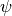
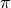
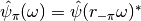
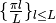
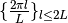
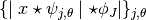
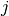
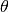
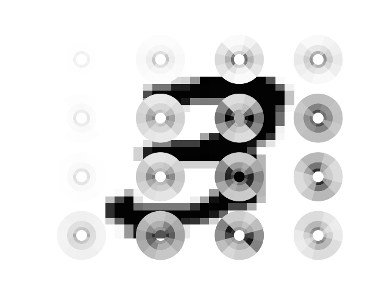

Note
Click here to download the full example code
Scattering disk display¶
This script reproduces concentric circles that encode Scattering coefficient’s energy as described in “Invariant Scattering Convolution Networks” by Bruna and Mallat. Here, for the sake of simplicity, we only consider first order scattering.
Author: https://github.com/Jonas1312 Edited by: Edouard Oyallon
import matplotlib as mpl
import matplotlib.cm as cm
import matplotlib.pyplot as plt
import numpy as np
from kymatio import Scattering2D
from PIL import Image
import os
img_name = os.path.join(os.getcwd(),"images/digit.png")
Scattering computations¶
First, we read the input digit:
src_img = Image.open(img_name).convert('L').resize((32,32))
src_img = np.array(src_img)
print("img shape: ", src_img.shape)
Out:
img shape: (32, 32)
We compute a Scattering Transform with L=6 angles and J=3 scales. Rotating a wavelet

by
is equivalent to consider its conjugate in fourier:
.Combining this and the fact that a real signal has a Hermitian symmetry implies that it is usually sufficient to use the angles

at computation time. For consistency, we will however display
, which implies that our visualization will be redundant and have a symmetry by rotation of .L = 6
J = 3
scattering = Scattering2D(J=J, shape=src_img.shape, L=L, max_order=1, frontend='numpy')
We now compute the scattering coefficients:
src_img_tensor = src_img.astype(np.float32) / 255.
scattering_coefficients = scattering(src_img_tensor)
print("coeffs shape: ", scattering_coefficients.shape)
# Invert colors
scattering_coefficients = -scattering_coefficients
Out:
coeffs shape: (19, 4, 4)
We skip the low pass filter…
scattering_coefficients = scattering_coefficients[1:, :, :]
norm = mpl.colors.Normalize(scattering_coefficients.min(), scattering_coefficients.max(), clip=True)
mapper = cm.ScalarMappable(norm=norm, cmap="gray")
nb_coeffs, window_rows, window_columns = scattering_coefficients.shape
Figure reproduction¶
Now we can reproduce a figure that displays the energy of the first order Scattering coefficient, which are given by

. Here, each scattering coefficient is represented on the polar plane. The polar radius and angle correspond respectively to the scale
and the rotation
applied to the mother wavelet.Observe that as predicted, the visualization exhibit a redundancy and a symmetry.
fig,ax = plt.subplots()
plt.imshow(1-src_img,cmap='gray',interpolation='nearest', aspect='auto')
ax.axis('off')
offset = 0.1
for row in range(window_rows):
for column in range(window_columns):
ax=fig.add_subplot(window_rows, window_columns, 1 + column + row * window_rows, projection='polar')
ax.set_ylim(0, 1)
ax.axis('off')
ax.set_yticklabels([]) # turn off radial tick labels (yticks)
ax.set_xticklabels([]) # turn off degrees
# ax.set_theta_zero_location('N') # 0° to North
coefficients = scattering_coefficients[:, row, column]
for j in range(J):
for l in range(L):
coeff = coefficients[l + (J - 1 - j) * L]
color = mpl.colors.to_hex(mapper.to_rgba(coeff))
ax.bar(x=(4.5+l) * np.pi / L,
height=2*(2**(j-1) / 2**J),
width=2 * np.pi / L,
bottom=offset + (2**j / 2**J) ,
color=color)
ax.bar(x=(4.5+l+L) * np.pi / L,
height=2*(2**(j-1) / 2**J),
width=2 * np.pi / L,
bottom=offset + (2**j / 2**J) ,
color=color)

Total running time of the script: ( 0 minutes 2.181 seconds)